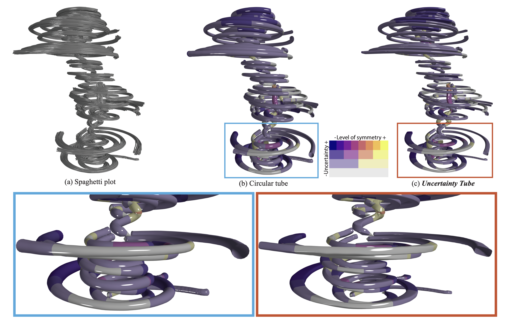
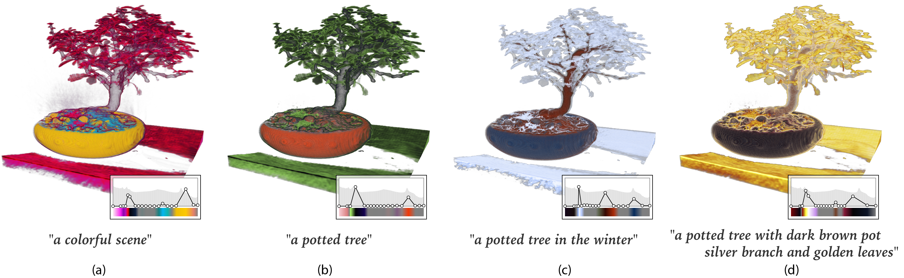

Jixian Li, Timbwaoga A. J. Ouermi, MengJiao Han, and Chris R. Johnson. "Uncertainty Tube Visualization of Particle Trajectories." Uncertainty Visualization Workshop, 2025
arxiv *** MEOW ***
*** MEOW ***

Timbwaoga A. J. Ouermi,
Jixian Li, Zachary Morrow, Bart van Bloemen Waanders, and Chris R. Johnson. "Glyph-Based Uncertainty Visualization and Analysis of Time-Varying Vector Fields." Uncertainty Visualization Workshop, 2024
10.1109/UncertaintyVisualization63963.2024.00014 *** MEOW ***

Timbwaoga A. J. Ouermi,
Jixian Li, Tushar M. Athawale, and Chris R. Johnson. "Estimation and Visualization of Isosurface Uncertainty from Linear and High-Order Interpolation methods." Uncertainty Visualization Workshop, 2024
10.1109/UncertaintyVisualization63963.2024.00012 *** MEOW ***
*** MEOW ***

Sangwon Jeong,
Jixian Li, Shusen Liu, Chris R. Johnson, and Matthew Berger. "Text-based Transfer Function Design for Semantic Volume Rendering." IEEE VIS, 2024
arxiv 10.1109/VIS55277.2024.00047 *** MEOW ***

MengJiao Han,
Jixian Li, Sudhanshu Sane, Shubhan Gupta, Bei Wang, Steve Petruzza, and Chris R. Johnson. "Interactive Visualization of Time-Varying Flow Fields Using Particle Tracing Neural Networks." PacificVis, 2024
arxiv project 10.1109/PacificVis60374.2024.00015 *** MEOW ***
*** MEOW ***

Zhe Wang, Dylan Cashman, Mingwei Li,
Jixian Li, Matthew Berger, Joshua A. Levine, Remco Chang, and Carlos Scheidegger. "NeuralCubes: Deep Representations for Visual Data Exploration." IEEE Big Data, 2021
arxiv 10.1109/BigData52589.2021.9671390 *** MEOW ***
*** MEOW ***